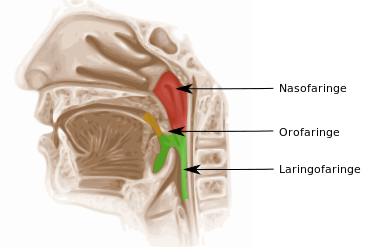

La faringe es una estructura con forma de tubo con dos tejidos que está situada en el cuello y revestida de una membrana mucosa; conecta la cavidad bucal y las fosas nasales con el esófago y la laringe respectivamente, y por ella pasan tanto el aire como los alimentos, por lo que forma parte del aparato digestivo así como del respiratorio. Ambas vías quedan separadas por la epiglotis, que actúa como una válvula. En el ser humano la faringe mide unos trece centímetros, extendida desde la base externa del cráneo hasta la sexta o séptima vértebra cervical, a la altura del borde caudal del cartílago cricoides.
